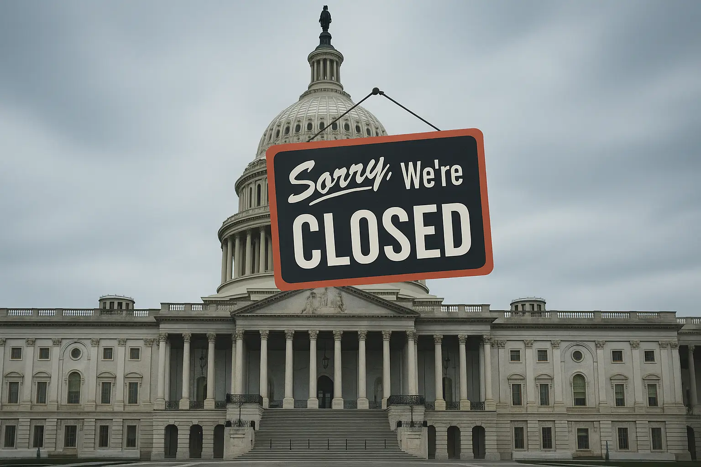

2025-11-07
How Government Shutdowns Affect the IRS and Tax Payments

Taxpayer Guide to Government Shutdowns
Why You Still Need to File and Pay on Time
U.S. law requires Congress to pass an annual budget – and if one isn't passed by October 1, the government shuts down. That puts millions of federal employees on furlough, stops many government services, and often has an impact on aid payments such as food stamps. A lot of people start wondering – if the government isn't open, do I need to pay taxes? Unfortunately, yes, you do.
Government shutdowns affect the IRS, but they don't shut down the agency completely. Even though a significant portion of IRS employees go home, the agency's computers are still noting late returns, adding on penalties, and initiating automated collection actions.
In 2025, the longest government shutdown in history started on October 1st, and at the time of writing, the government continues to be shut down. Read on to learn how government shutdowns affect the IRS.
Key takeaways.
- Government shutdowns stop many IRS services but keep "essential" functions going.
- Taxpayers still must file and pay on time if they want to avoid penalties.
- The IRS's computers accept returns and payments, but they also add on interest and penalties and initiate certain collection actions.
Does the IRS stay open when the government shuts down?
Certain portions of the IRS stop during a shutdown, while other parts remain open. In a nutshell, most services are not available. But the computers keep calculating interest on back taxes, adding penalties to late payments and returns, and initiating collection actions through the Automated Collection System (ACS).
During government shutdowns, a significant number of IRS employees go on furlough. During the latest government shutdown, about half of all IRS employees were sent home in early October, but by November, some news outlets reported that nearly 75% of the IRS workforce was sent home.
What does this mean for taxpayers? Longer hold times, fewer services, and no access to the Taxpayer Assistance Center (TAC). But at the same time, penalties on late returns and a risk of automated collection actions, including tax liens, wage garnishments, and bank levies if you owe back taxes.
How the IRS reacts to government shutdowns
Government shutdowns always slow down the IRS – and the longer they last, the greater impact they have on taxpayers. Shutdowns aren't unusual, but they're generally only a few days long. In fact, the government has only shut down for more than five days a handful of times.
Prior to 2025, the longest shut downs included a 35-day shutdown in 2018 to 2019 under President Trump, a 21-day period in 1995-1996 under President Clinton, and a 16-day shutdown in 2013 under President Obama.
As you can see, the longest shutdowns have all been clustered in the last 30 years, and they've caused the following problems for taxpayers:
- Halt in processing paper returns, leading to delayed refunds and risk of penalties for taxpayers.
- Longer hold times, causing frustration and robbing taxpayers of the ability to request installment agreements or penalty relief over the phone.
- Disruptions to the creation of tax forms - every year, the IRS updates tax returns and many other forms for taxpayers.
- Limited processing for appeals or disputes, potentially causing taxpayers to face actions that should have been stopped once the appeal was entered.
- Cancellation of many Tax Court cases – the Tax Court doesn't close completely during a shutdown, but it relies on contingency funds and once those are exhausted, the Court cancels many cases.
The above is certainly not an exhaustive list. Taxpayers may face other issues as well when the IRS's slows its processes and furloughs employees during a shutdown. The effects tend to be more pronounced the longer the shutdown lasts – for instance, during the 2025 government shutdown, the federal court system ran out of funds on October 17, 2025, causing the Tax Court to cancel all sessions for the following week and beyond.
Often, taxpayers continue to feel effects once the government reopens, while IRS employees are scrabbling to deal with backlogged returns and other challenges. It's not just material challenges – when IRS employees return to work, they're often stressed and overwhelmed, and unfortunately, that can affect taxpayers as well, especially if they're trying to resolve a tough situation or deal with a revenue officer or agent.
IRS operations when the federal government shuts down
So, what continues to work at the IRS? Can you file taxes? Make payments? Get penalty relief? Apply for IRS programs? The agency continues to keep "essential" operations running, but its definition of essential may feel a lot different than yours, especially if you're trying to appeal a collection action or apply for a settlement.
Here's what keeps running at the IRS during a shut down:
- Efiling systems – the IRS's computers still accept e-filed returns, and they note when they were filed.
- Penalties – if your return was e-filed late, the computers will automatically add on late filing penalties. If you mailed in a tax return, it probably won't be opened, but once the government re-opens, the postmark will show when it was filed, and the IRS will add on penalties accordingly.
- E-payments – you can still make payments through the EFTPS, the IRS's online system, using tax prep software, or through other electronic methods. If you mail in a payment, it may not get processed or deposited, and that can put you at risk if you're already behind.
- Automated collection actions – The IRS's ACS handles a lot of collection actions, including filing tax liens, sending out collection notices, and initiating wage garnishments and bank levies. If you've received a Final Notice of Intent to Levy, you may face a garnishment or levy if you don't act by the deadline on the notice, but unfortunately, the shutdown can make it nearly impossible to enter an appeal. That's why it's critical to work with a tax professional, such as an enrolled agent.
But unfortunately, these functions stop or significantly slow down during a government shutdown:
- ACS call centers – if your account is in the ACS, you will face much longer hold times during a government shutdown. You may not be able to reach anyone to help you, and you may get disconnected. This also affects tax pros, who will have trouble getting through on the phone, but experienced pros generally have multiple ways to deal with IRS tax problems.
- Taxpayer Assistance Centers (TAC) – All TACs are closed during government shutdowns. This stops taxpayers from getting critical assistance when dealing with certain types of disputes or when they're unable to get help from the IRS in the usual timeframe.
- Minimal to no mail processing – the IRS still handles a lot of functions through the mail. Whether you've sent in an installment agreement request, an offer in compromise application, or another form, it's unlikely to get opened or processed during a shutdown.
- Audits – this may sound like a good thing because generally no one looks forward to a tax audit, but it can be disastrous for taxpayers who are about to wrap up an audit or are disputing audit results. However, if you're in the midst of an audit or have recently been selected for an audit, you may be able to use the extra time to your advantage – consider reaching out for experienced audit representation so that when the government reopens, you have an airtight case and all the documents you need to get through the audit as easily as possible.
- Collection appeals – The appeals process is manual, and if you've appealed a collection action, your appeal may not be reviewed. This has the potential to wreak havoc in certain situations. For instance, if you mail in an appeal and it's not received, the IRS may move forward with the collection action once the appeal deadline passes. If you're at risk of this happening, reach out to a tax professional as soon as possible.
Tips for taxpayers – how to navigate government shut downs
A government shutdown can be stressful – especially if you work for the government, rely on certain forms of government assistance, or owe taxes to the IRS. To protect yourself, keep these tips in mind when dealing with the IRS during a shutdown.
Here's what keeps running at the IRS during a shut down:
- File on time – whether you e-file or mail in a return, hitting the due date will help you avoid penalties for filing or paying late.
- Use electronic systems – whenever possible, deal with the IRS electronically during a shutdown. For example, instead of mailing in a paper check to pay income taxes, create an IRS online account and pay through there.
- Keep paying taxes – it's tempting to think you don't need to pay taxes if the government isn't running, but unfortunately, the law still requires you to pay taxes. Whether you owe payroll taxes, estimated quarterly taxes, or any other type of tax, make your payment promptly.
- Continue to make monthly payments – if you're on an installment agreement, make your monthly payment as usual. If the payments are set up as direct debit from your bank account, make sure you have enough to cover them. If you don't, the IRS's computers will see the missed payment, and they'll issue a CP523 to let you know that your payment plan is in default and may be terminated.
- Contact a tax professional – professional help can be more important than ever during a shutdown, especially since Taxpayer Assistance Centers aren't open, phones aren't being answered, and mail isn't being processed. A tax professional can document everything and ensure that your rights are protected, even if the government isn't operating at full capacity.
In short, the law requires taxpayers to keep up with their filing and payment obligations even if the government isn't keeping up with its service offerings or functions. If you're facing a tax problem during a government shutdown, hiring professional help can be critical.
Contact us for help with tax problems today
If you're dealing with tax problems, we can help. At Nashville Tax Solutions, our experienced tax specialists can help you deal with the IRS, whether the government is open or not. We'll look carefully at your problem and customize a solution based on your unique needs – don't wait, contact us for help today.
Our AnswersFrequently Asked Questions
Yes, the IRS is affected – the majority of staff are furloughed (sent home with no pay). This causes a disruption in services for taxpayers.
Yes, you are still required to pay taxes during a government shutdown. If you don't, you will incur late payment or filing penalties. If you appeal a tax liability based on not owing taxes during a shutdown, the courts will likely dismiss your cases as frivolous and assess a significant penalty against you.
Yes, the agency will know that you filed late even if the government is shut down. The agency uses electronic time stamps and post marks to determine when returns are filed or payments are made, and they add penalties based on that information.
Yes, if your wages are currently being garnished by the IRS, the garnishment will continue while the government is shut down. The IRS may also be able to start a garnishment while the government is shutdown, using the ACS.
Yes, unfortunately, you need to review the notice and potentially take action, but the right steps can depend on where you are in the collection cycle (for instance, if ACS or a revenue officer is handling your case) and the nature of the notice. To understand what's happening, you should consult with a tax professional.